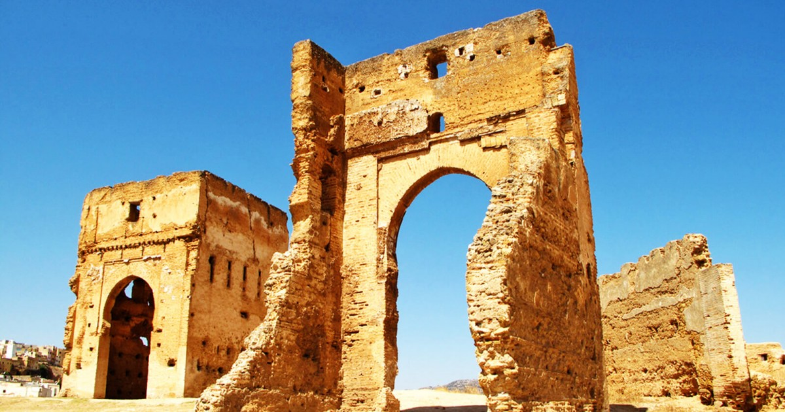

Definition:

Mirleft est une petite ville perchée en haut des gigantesques falaises couleur ocre qui bordent l'océan. La vue sur la côte Atlantique y est magnifique, surtout depuis le fort Tidli. Construit en 1935, ce fort militaire aujourd'hui abandonné domine l'océan ainsi que la ville traditionnelle où vous pourrez trouver des produits locaux divers et variés : huile d'argan, poteries marocaines, babouches etc.
Mirleft est connue des touristes qui optent pour le dépaysement et la nature sauvage, en particulier dans la période qui s’étend à partir du mois de novembre jusqu’à mai, et qui coïncide évidemment avec l’hiver européen. En effet, comme nous explique Lamia, gérante d’un petit hôtel convivial au centre du village : "la majorité des visiteurs proviennent d’Europe: Les Français sont au premier rang suivis des Allemands, des Anglais puis des Espagnols". Les surfeurs et les parapentistes trouvent ici un climat doux, propice aux sports aquatiques et à la pêche. De nombreuses familles arrivent également accompagnées de leurs enfants pour profiter du soleil généreux de Mirleft qui dure presque toute l’année.
Historique:
Mirleft,Sidi Ifni et d'autres régions du sud du Maroc conservent de nombreux quartiers et de monuments d'architecture militaire qui remontent à la période coloniale espagnole au XXe siècle (1934-1969). Beaucoup de ces vestiges, dotés d'une charge historique et culturelle importante, sont actuellement abandonnés, voire en ruines. La disparition de ce patrimoine, témoin d’une période aussi récente que marquante de l'histoire du royaume sera une véritable perte pour la région. Les autorités locales ainsi que le ministère de la Culture sont alors invités à prendre en charge la restauration, la préservation et la mise en avant de ce patrimoine de valeur
Monuments:
Le fort de Tidli est situé au sud de Mirleft, bourgade qu'il domine du haut d'une colline.Ce fort ne date que de 1935. Malgré sa construction relativement récente, il arbore un style architectural traditionnel. Tidli servait de poste d'observation à l'Armée française. A deux kilomètres au sud de Mirleft commençait la zone occupée par les Espagnols. Le fort appartient aujourd'hui aux Forces armées royales (FAR).
Activités:
De nombreuses activités sportives en pleine nature sont possibles sur place, à Mirleft. Ainsi, vous pourrez, emmenés par lespêcheurs professionnels, découvrir les plus beaux endroits de la côte. A vous les petites criques et les plages connues de quelques-uns seulement. De l’initiation au plus haut niveau, des stages de surf sont possibles à Mirleft : les conditions idéales sont réunies ici pour la pratique de ce sport. Si vous le préférez, en randonnée, en ballade à cheval ou en VTT, vous partirez à la découverte de l’arrière-pays et du Sahara marocain.
Hôtels:
Mirleft dispose de plusieurs hôtels pour toutes les catégories, du luxe au régulier, tels que:
- Aftas Trip
- Auberge Dar Najmat
- Hotel De Charme Les 3 Chameaux 4 étoiles
- Un Thé Au Bout Du Monde
- Europa mirlef t aventur Guest House
- Dunes Beach Resort
- ...
Tous ces hôtels accueillent les touristes et les visiteurs.
Historique:
Mirleft,Sidi Ifni et d'autres régions du sud du Maroc conservent de nombreux quartiers et de monuments d'architecture militaire qui remontent à la période coloniale espagnole au XXe siècle (1934-1969). Beaucoup de ces vestiges, dotés d'une charge historique et culturelle importante, sont actuellement abandonnés, voire en ruines. La disparition de ce patrimoine, témoin d’une période aussi récente que marquante de l'histoire du royaume sera une véritable perte pour la région. Les autorités locales ainsi que le ministère de la Culture sont alors invités à prendre en charge la restauration, la préservation et la mise en avant de ce patrimoine de valeur
Monuments:

Le fort de Tidli est situé au sud de Mirleft, bourgade qu'il domine du haut d'une colline.Ce fort ne date que de 1935. Malgré sa construction relativement récente, il arbore un style architectural traditionnel. Tidli servait de poste d'observation à l'Armée française. A deux kilomètres au sud de Mirleft commençait la zone occupée par les Espagnols. Le fort appartient aujourd'hui aux Forces armées royales (FAR).
Activités:
De nombreuses activités sportives en pleine nature sont possibles sur place, à Mirleft. Ainsi, vous pourrez, emmenés par lespêcheurs professionnels, découvrir les plus beaux endroits de la côte. A vous les petites criques et les plages connues de quelques-uns seulement. De l’initiation au plus haut niveau, des stages de surf sont possibles à Mirleft : les conditions idéales sont réunies ici pour la pratique de ce sport. Si vous le préférez, en randonnée, en ballade à cheval ou en VTT, vous partirez à la découverte de l’arrière-pays et du Sahara marocain.
Hôtels:
Mirleft est une petite ville perchée en haut des gigantesques falaises couleur ocre qui bordent l'océan. La vue sur la côte Atlantique y est magnifique, surtout depuis le fort Tidli. Construit en 1935, ce fort militaire aujourd'hui abandonné domine l'océan ainsi que la ville traditionnelle où vous pourrez trouver des produits locaux divers et variés : huile d'argan, poteries marocaines, babouches etc.
Mirleft est connue des touristes qui optent pour le dépaysement et la nature sauvage, en particulier dans la période qui s’étend à partir du mois de novembre jusqu’à mai, et qui coïncide évidemment avec l’hiver européen. En effet, comme nous explique Lamia, gérante d’un petit hôtel convivial au centre du village : "la majorité des visiteurs proviennent d’Europe: Les Français sont au premier rang suivis des Allemands, des Anglais puis des Espagnols". Les surfeurs et les parapentistes trouvent ici un climat doux, propice aux sports aquatiques et à la pêche. De nombreuses familles arrivent également accompagnées de leurs enfants pour profiter du soleil généreux de Mirleft qui dure presque toute l’année.
les plages:

La plage de Mirleft est située dans une baie calme entourée de montagnes. La surface de la plage est constituée de sable doré avec une texture soyeuse. L'entrée de la mer lisse et peu profonde, l'eau est propre, transparente avec une teinte bleu vif plus proche de l'horizon de l'océan Atlantique se confondent avec le ciel, donne le bord du monde. La plage est populaire auprès des touristes et des habitants. Pendant la période de juillet à septembre, il y a un afflux de touristes, donc la plage est bondée.
Quelques plages à Mirleft:
- plage imin targa
- plage lagsira
- plage aftass
- palge sidi mohomed ben abdellah
- ...